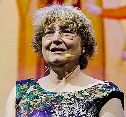

Ingrid Daubechies | |
|---|---|
 Daubechies at the ICM 2018 | |
| Born | 17 August 1954 |
| Alma mater | Vrije Universiteit Brussel |
| Known for | Wavelets |
| Awards | MacArthur Fellowship (1992) NAS Award in Mathematics (2000) Noether Lecturer (2006) Leroy P. Steele Prize (2011) Nemmers Prize in Mathematics (2012) BBVA Foundation Frontiers of Knowledge Award (2012) L'Oréal-UNESCO For Women in Science Award (2019) Princess of Asturias Award (2020) Wolf Prize in Mathematics (2023) National Medal of Science (2025) |
| Scientific career | |
| Fields | Mathematician Physicist |
| Institutions | Duke University Princeton University Rutgers University |
| Jean Reignier Alex Grossmann | |
Doctoral students | Anna Gilbert Rachel Ward Cynthia Rudin |
Baroness Ingrid Daubechies (/doʊbəˈʃiː/ doh-bə-SHEE;[1] French: [dobʃi]; born 17 August 1954) is a Belgian-American physicist and mathematician at Duke University. She is best known for her work with wavelets in image compression.
Daubechies is recognized for her study of the mathematical methods that enhance image-compression technology. She is a member of the National Academy of Engineering,[2] the National Academy of Sciences[3] and the American Academy of Arts and Sciences.[4] She is a 1992 MacArthur Fellow. She also served on the Mathematical Sciences jury for the Infosys Prize from 2011 to 2013.
The name Daubechies is widely associated with the orthogonal Daubechies wavelet and the biorthogonal CDF wavelet. A wavelet from this family of wavelets is now used in the JPEG 2000 standard.
Her research involves the use of automatic methods from both mathematics, technology, and biology to extract information from samples such as bones and teeth.[5] She also developed sophisticated image processing techniques used to help establish the authenticity and age of some of the world's most famous works of art, including paintings by Vincent van Gogh and Rembrandt.[6]
Daubechies is on the board of directors of Enhancing Diversity in Graduate Education (EDGE), a program that helps women entering graduate studies in the mathematical sciences. She was the first woman to be president of the International Mathematical Union (2011–2014).[7] She became a member of the Academia Europaea in 2015.[8]
Daubechies was born in Houthalen, Belgium, as the daughter of Simonne Duran (a criminologist) and Marcel Daubechies (a civil mining engineer).[9] She remembers that when she was a little girl and could not sleep, she did not count numbers, as one would expect from a child, but started to multiply numbers by two from memory. Thus, as a child, she already familiarized herself with the properties of exponential growth. Her parents found out that mathematical conceptions, such as cone and tetrahedron, were familiar to her before she reached the age of six. She excelled at the primary school and was moved up a grade after only three months. After completing the Lyceum in Hasselt,[10] she entered the Vrije Universiteit Brussel at age 17.[11]
Daubechies completed her undergraduate studies in physics at the Vrije Universiteit Brussel in 1975. During the next few years, she visited the CNRS Center for Theoretical Physics in Marseille several times, where she collaborated with Alex Grossmann; this work was the basis for her doctorate in quantum mechanics.[11] She obtained her PhD in theoretical physics in 1980 at the Vrije Universiteit Brussel.[12]
After completing her doctorate, Daubechies continued her research career at the Vrije Universiteit Brussel until 1987, rising through the ranks to positions roughly equivalent with research assistant-professor in 1981 and research associate-professor 1985, funded by a fellowship from the NFWO (Nationaal Fonds voor Wetenschappelijk Onderzoek).[13]
Daubechies spent most of 1986 as a guest-researcher at the Courant Institute of Mathematical Sciences in New York. At Courant she made her best-known discovery: based on quadrature mirror filter-technology she constructed compactly supported continuous wavelets that would require only a finite amount of processing, in this way enabling wavelet theory to enter the realm of digital signal processing.[13][14]
In July 1987, Daubechies joined Bell Laboratories in Murray Hill, New Jersey. In 1988, she published the result of her research on orthonormal bases of compactly supported wavelets in Communications on Pure and Applied Mathematics.[11][15]
In 1991, Daubechies was appointed as a professor at Rutgers University in New Brunswick, where she taught in their mathematics department.[12] She remained there through 1994.
Daubechies moved to Princeton University in 1994, where she was active within the program in applied and computational mathematics. In 2004, she was named as the William R. Kenan, Jr. Professor there.[16] She was the first woman to become a full professor of mathematics at Princeton.[6]
In January 2011, Daubechies moved to Duke University to serve as the James B. Duke Professor in the department of mathematics and electrical and computer engineering at Duke University.[17] In 2016, she and Heekyoung Hahn[18] founded Duke Summer Workshop in Mathematics (SWIM) for rising high school seniors who were female.[19][20]
In 2020 and 2021 Daubechies, along with fiber artist Dominique Ehrmann, led a team of mathematicians and artists who collectively built the touring art and math installation known as Mathemalchemy.[21]
Daubechies has used mathematical techniques on multiple art restoration projects. Her team worked on restoring the Ghent Altarpiece, a massive fifteenth-century work of art consisting of 12 panels that are attributed to the brothers Hubert and Jan van Eyck. Daubechies and several colleagues developed new mathematical techniques to both reverse the effects of aging upon the artworks and untangle and remove the effects of past ill-fated conservation efforts. Using highly precise photographs and X-rays of the panels as well as various filtering methods, the team of mathematicians found an automatic way to detect the cracks caused by aging. They also were able to decipher the apparent text of the polyptych, which was attributed to Thomas Aquinas.
Daubechies and her collaborators also contributed to the restoration of the fourteenth-century Saint John Altarpiece by Francescuccio Ghissi in the North Carolina Museum of Art, applying some of the techniques they discovered working on the Ghent Altarpiece restoration. With this project the mathematicians used machine-learning algorithms to separate features.[22]
Daubechies received the Louis Empain Prize for Physics in 1984. It is awarded once every five years to a Belgian scientist on the basis of work done before the age of 29.[23]
In 1992, she was awarded a MacArthur Fellowship and in 1993, she was elected to the American Academy of Arts and Sciences.[24][25] In 1994, she received the American Mathematical Society Steele Prize for Exposition for her book, Ten Lectures on Wavelets,[23] and was invited to give a plenary lecture at the International Congress of Mathematicians in Zurich. In 1997, she was awarded the AMS Ruth Lyttle Satter prize.[26][27] In 1998, she was elected to the United States National Academy of Sciences[28] and won the Golden Jubilee Award for Technological Innovation from the IEEE Information Theory Society.[29] She became a foreign member of the Royal Netherlands Academy of Arts and Sciences in 1999.[30]
In 2000, Daubechies became the first woman to receive the National Academy of Sciences Award in Mathematics, presented every four years for excellence in published mathematical research.[31] The award honored her "for fundamental discoveries on wavelets and wavelet expansions and for her role in making wavelets methods a practical basic tool of applied mathematics".[32] She was awarded the Basic Research Award of the German Eduard Rhein Foundation[33][34] as well as the NAS Award in Mathematics.[35] In 2003, Daubechies was elected to the American Philosophical Society.[36]
In January 2005, Daubechies became the third woman since 1924 to give the Josiah Willard Gibbs Lecture sponsored by the American Mathematical Society. Her talk was on "The Interplay Between Analysis and Algorithm".[14] She was chosen by the AWM to be the Kovalevsky Lecturer that same year. Daubechies was the 2006 Emmy Noether Lecturer at the San Antonio Joint Mathematics Meetings.[37] In September 2006, the Pioneer Prize from the International Council for Industrial and Applied Mathematics was awarded jointly to Daubechies and Heinz Engl.[14]
In 2010, she was awarded an honorary doctorate by The Norwegian University of Science and Technology (NTNU).[38] In 2011, Daubechies was the SIAM John von Neumann Lecturer,[39] and was awarded the IEEE Jack S. Kilby Signal Processing Medal,[40] the Leroy P. Steele Prize for Seminal Contribution to Research from the American Mathematical Society,[41] and the Benjamin Franklin Medal in Electrical Engineering from the Franklin Institute.[42] In 2012, King Albert II of Belgium granted Daubechies the title of Baroness.[43] She also won the 2012 Nemmers Prize in Mathematics awarded by Northwestern University,[44] and the 2012 BBVA Foundation Frontiers of Knowledge Award in the Basic Sciences category (jointly with David Mumford).[14]
Daubechies gave the Gauss Lecture of the German Mathematical Society in 2015.[45] The Simons Foundation, a private foundation based in New York City that funds research in mathematics and the basic sciences, gave Daubechies the Math + X Investigator award, which provides money to professors at American and Canadian universities to encourage new partnerships between mathematicians and researchers in other fields of science.[7] She was the one to suggest to Simons that the foundation should fund better mechanisms for interpreting existing data, rather than new research.[46] Also in 2015, Daubechies was elected a member of the National Academy of Engineering for "contributions to the mathematics and applications of wavelets".[2]
In 2018, Daubechies won the William Benter Prize in Applied Mathematics from City University of Hong Kong (CityU). She is the first woman to be the recipient of the award. Prize officials cited the pioneering work of Daubechies in wavelet theory and her "exceptional contributions to a wide spectrum of scientific and mathematical subjects" and noted that "her work in enabling the mobile smartphone revolution is truly symbolic of the era".[47] Also in 2018, Daubechies was awarded the Fudan-Zhongzhi Science Award ($440,000) for her work on wavelets.[48]
She is part of the 2019 class of fellows of the Association for Women in Mathematics.[49][50] Daubechies was named the North American Laureate of 2019 L'Oréal-UNESCO International Award For Women in Science. Since 1998, the annual worldwide award recognizes five outstanding women in chemistry, physics, materials science, mathematics, and computer science.[51][52] Also in 2019, she became a member of the German Academy of Sciences Leopoldina.[53]
Daubechies received the Princess of Asturias Award for Technical and Scientific Research in 2020.[54]
In 2023, she was awarded the Wolf Prize in Mathematics "for work in wavelet theory and applied harmonic analysis”.[55] She was the first woman to receive this award.[56]
In 2024, Daubechies received an honorary Doctor of Sciences from University of Pennsylvania[57] and an honorary degree from Amherst College.[58]
Daubechies has been awarded The Bakerian Medal and Lecture 2025 for her work on wavelets and image compression and her exceptional contributions to a wide spectrum of physical, technological, and mathematical applications.[59]
In January 2025, Daubechies was a recipient of the National Medal of Science.[60]
In 1985, Daubechies met mathematician Robert Calderbank when he was on a three-month exchange visit from Bell Laboratories in Murray Hill, New Jersey to the Brussels-based mathematics division of Philips Research. They married in 1987.[61] They have two children, Michael Calderbank and Carolyn Calderbank.[61]
{{cite web}}: CS1 maint: archived copy as title (link)
{{cite web}}: CS1 maint: deprecated archival service (link)
The 2018 Fudan-Zhongzhi Science Award has been awarded to Ingrid Daubechies, James B. Duke Professor of Mathematics and Electrical and Computer Engineering. The award is presented for her remarkable contributions to wavelets, especially the orthogonal Daubechies wavelet and the biorthogonal CDF (Cohen-Daubechies-Feauveau) wavelet
_(cropped).jpg){kind=link}